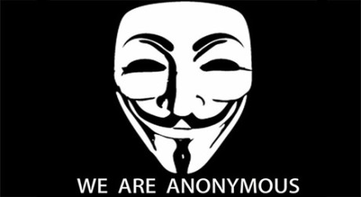

January 30, 2019
Security Guide for Political Activists
版权声明
本博客所有的原创文章，作者皆保留版权。转载必须包含本声明，保持本文完整，并以超链接形式注明作者编程随想和本文原始地址： https://program-think.blogspot.com/2019/01/Security-Guide-for-Political-Activists.html
This is a rough translation made with the assistance of https://translate.google.com.
Introduction
I haven't been online for several days, and some readers may think that something is wrong. Do not worry! On the 21st, I was still replying to comments. As of this blog post, I have not exceeded the 14-day period, and this is normal silence. Because this blog post aims to comprehensively share the technical experience of anti-Party activities over the last decade, involving a lot of piecemeal content, it took a lot of time and effort to sort it out.
My defense measures are basically reliable
Readers familiar with this blog know that I have already smeared the party state for many years. From the first political blog to writing this summary, the time span has exceeded 9.5 years, even if it is rounded up to ten years :) I remember many years ago, some people said in the blog comment area (the following gives the general idea): "You can get on the Internet because the network supervision department has not noticed you. When the network police start to scrutinize you, you will die." At that time, many things had not happened yet, and there was no material to refute. Now it can be refuted arbitrarily: the relevant departments of the court have long been eyeing the shackles; unfortunately they did not take a point. If you want to see the evidence, please see The 10th Anniversary of This Blog in the previous few days. I extracted some of the main points:
1. As early as the "Chinese Jasmine Revolution" in 2011, I even sent a number of blog posts with the nature of smart (Note: those articles can obviously be evaluated as inciting subversion of state power, the big sin.
2. In 2016, the court issued a Government Removal Order to Github in an attempt to kill the Pagoda Relations Network project. (Note: Github has spine, this project has not stood up yet).
3. Two Gmail mailboxes National Invasion. (Note: They appeared in 2011 and 2017 respectively.)
4. In 2017, the large-scale screen for the blog comment area. (Note: The Blogspot comment system has a CAPTCHA code mechanism, want to reach that kind of brushing speed, need a lot of professional five hairs to brush together.)
The above-mentioned signs of this kind have already been explained - it is the eye of the relevant departments of the court.
After spending so much saliva, I just want to explain one point: The defensive measures are basically relying on the spectrum! In other words, my defensive measures I do not dare to call "perfect" (perfect is impossible to achieve), but at least there are no obvious loopholes. Otherwise (if there are obvious loopholes), is it either cross-provincial or the account is compromised, and how can it smack the court and viciously attack the party and state leaders for nearly a decade?
Target reader of this article
For many years, this blogger has had a feeling that many people with political qualities (behind the wall) lack the skills of information security; therefore, they cannot use the Internet to fight the party state. Although there are already many democracy websites outside the wall, many pro-democracy people have opened social network (SN) accounts. But they live outside the wall after all. The process of democratization in the Tian dynasty cannot rely on overseas people. The key is to rely on the people who live in the heavens. So today, the first is to help those netizens who are interested in anti-Party activities.
Second, it is to help those who defend the freedom of speech on the Internet. I once wrote an article entitled N Technical Powers Against Autocracy and Defending Freedom and talked about this issue.
Of course, all the techniques are double-edged swords, all of which can be abused. Some guys who do bad things on the web will also benefit from this article. In this regard, you are also very helpless :( However, you will not stop the spread of technology because of the possibility of abuse of technology.
The relationship between this article and the information security tutorial
Over the years, I have written a lot of information-security related literacy tutorials. There is a lot of content to talk about today. The previous tutorials are already there. So why should I write this one? Because those written before are only for a specific aspect or a specific software. And this article is meant to put all these together, and to facilitate those who are just getting started in the information security field. In order to avoid old readers saying, "This is just a rehash," this article contains some things that have not been talked about in the past. In addition, the last section also attaches several practical cases as negative materials.
Two core principles
The following two principles need to be kept in mind:
Principle 1: Make sure your identity is hidden
Principle 2: Make sure your account is secure
The following discussion is based on these two principles. Regarding the hidden identity, I would like to add: Even if your body is located outside the wall, it is still necessary to ensure your identity is hidden!

How to choose a web platform?
Never use domestic web services
The term "domestic" as used herein refers to China, including Hong Kong and Macau, but excluding Taiwan.
If you want to conduct sensitive political activities on the web, this principle must be kept in mind. The use of domestic network services for anti-Party activities will greatly increase the risk of your exposure.
Take myself as an example. When I first opened the blog (early 2009), I also registered a CSDN account and set up a mirror blog on CSDN (for details, see The 10th Anniversary of This Blog). Later, I smeared the party. The CSDN account is used less and less.
Even if you use Tor to access CSDN throughout the process (that is, the CSDN server cannot know your public IP address), it will still know the eincriminating online activity time. Please note: The timeline also constitutes a certain amount of information. For a detailed introduction to this, please see the 9th article in the series How to Hide Your Traces and Avoid Cross-Province Hunting, How to Hide Your Traces and Avoid Cross-Province Hunting [9]: From the time perspective, talking about precautions against social engineering.
In addition to online time information, consider that many websites today rely heavily on JavaScript (with disabled JS, the websites can't be used). So, if you use a web service inside the wall, the script on its website possibly collects some system information from your local machine.
If time information and system information are not enough to scare you, then one more thing: When you use the network services behind the wall, all your user behavior may be collected and monitored by the relevant departments.
What is user behavior? If you are using the chat service (IM), your user behavior is all the content you have written and read. If you are using the mail service (email), your user behavior is all messages sent and received.
Please note: The amount of information contained in user behavior is very large. If you are careless about information related to your true identity, this information may become a clue to trace your identity in the future. If you don't believe it, please see one of the negative cases cited at the end of this article.
Do not register independent domain name
I have been asked more than once: Why don't you use an independent domain names for the blog? To be honest, I have always felt that as long as the content of the blog is good enough, it does not matter whether there is a separate domain name.
In addition, independent domain names add additional risk from an information security perspective.
Because domain names are scarce resources, any problem with registering an independent domain name naturally involves purchasing (that is, payment). Whether you are paying cash or bitcoin, you will be exposing an amount of information related to your identity (i.e., increased risk of identity exposure).
Do not build own server
The "server" mentioned in this section is a general term, including both physical hosts and VPS.
1. Consider the risk with payments. Similar to the domain name situation, once you have to build your own server, you also need to involve a payment. As mentioned in the previous section, payments increase the risk of identity exposure.
2. Consider the need for professional security hardening. In general, the server used to provide network services usually installs Linux; there are a few server versions of Windows or some kind of UNIX (BSD is a type of UNIX). Regardless of which operating system your server uses, you need to perform security hardening. Security hardening is already a very professional field, and there are relatively few people who know it. Then, you have to consider this article is about anti-Party activities. In other words, your security hardening not only is to prevent ordinary hackers, but also to prevent "The Hacker." Obviously, The Hacker is much more powerful than the ordinary hacker. Let me give you a little bit: Because of the working relationship, I used to deal with the hackers and know their weight. More details, I don't know much. Unless you are (1) a very experienced information security practitioner, and (2) you are familiar with server security hardening and (3) you are familiar with the security features of the operating system used by server, please ask yourself: Can you achieve these three items? If not, don't install the server yourself.
3. Consider the time and effort. This is another reason, by the way. To maintain the server consumes a lot of time and effort. Security hardening is not a once-in-a-lifetime item, but a dynamic process. If you maintain your own server, you need to keep an eye on security news, know if your operating system and software are exposed to new security vulnerabilities, learn about the latest intrusions, and so on. In the event of a security breach, you will need to upgrade/maintain. In addition, you have to conduct regular security checks and audits. All of these are very time and effort consuming!
Should you use dark net?
This problem is divided into two situations:
1. If you need to build your own server, the answer is negative. See the previous section for the reason.
2. If you don't need to build your own server, and the server is provided by a reliable third party, the answer is yes.
Speaking of dark net, I will add one point: Many people are overly superstitious about the capabilities of the dark net. I would like to remind you that the dark net just helps you hide at the network level. To be completely invisible, you have to take precautions at multiple levels. The following sections will talk about the other levels of precaution.
Pros and cons of different companies
I will simply say a few reference points:
1. Company's word-of-mouth. Don't use platforms that have poor word-of-mouth. This is obvious; there is no need for an example.
2. The scale of business in China. If a commercial company has a huge commercial interest in China, then once the relevant department finds the company to request private information from the company, the company will succumb to the court in order to protect their commercial interests in China. Having said that, I have already guessed that some students will counter this with the argument: In this case, why do you still use the Microsoft network disk to share ebooks? For a rebuttal, please see the answer to the next point.
3. Types of network services. Different types of network services have different security requirements. For example, I use Microsoft's network disk, but I will surely not consider Microsoft's email service. Because the web was originally intended for public sharing, there is no requirement for confidentiality. An email address is much more confidential (compared to the network disk). So in terms of choosing an email address, Google's Gmail is obviously better than Microsoft's Hotmail/Outlook because Google's business in China is negligible compared to its global business. The same applies to Github. Although Github has been acquired by Microsoft, it doesn't matter. Because the Github account is also used for public sharing, there is nothing private about it. In the worst case, the account is blocked. It's true that one day, I will transfer the battlefield and continue to fight.
How to register isolated virtual identity?
Select a screen name that is completely different
You have to choose a screen name that is completely different. This screen name cannot be similar to any screen name you have used before. Speaking of this, by the way, I will share the experience of picking a net name. Old readers should know, when I first started blogging, I just wanted to write a blog post about programming, which is a kind of experience sharing. I thought about using "Geeks who like software development," but the name was too long; it was too long to change to "Geeks who like programming"; I later changed it several times before I thought of this programming and thinking. The name is short and can be paired with Rodin's Thinker statue. My experience is, if the screen name is too long, it is difficult to remember (it is unfavorable from the perspective of communication). If it is too short, it is easily confused with other names (resulting in a decrease in recognition). So find a short length and a certain degree of recognizability.
Do not fill in real personal information when registering
For example, when you register an email address, you will be asked to fill in your birthday. You don't want to write a real one. As for mobile phone number, ID card number, and the like, they cannot be filled out according to the facts. For the SMS verification problem, I will discuss below, so don't worry.
Registration full process must go anonymous network
A registered account is the starting point of this sensitive virtual identity. If the identity information is exposed during the registration process, then knowing how to hide it in the future is useless! So you have to make sure that the entire process of registration is done via an anonymous network. In this way, the risk of public network IP exposure can be completely avoided. In other words, even if you register your visitor IP during the registration process, this IP is not your real public IP.
What is an anonymous network?
An anonymous network, as the name suggests, is one of the means to help you achieve anonymization. Performing various operations through an anonymous network (such as posting comments on the Internet) can make reverse tracing at the network level extremely difficult. Many people confuse anonymous network with dark network. In fact, this is a concept of two different dimensions. The reason for this confusion is that several well-known tools (Tor, I2P) are both dark nets and anonymous networks.
Is using only an over-the-wall proxy not reliable enough?
Wall-turning tools were originally designed to break through GFW and not to anonymize. If you are very concerned about anonymization (for example, if you want to publish sensitive political statements online), then you must use a dedicated anonymous network.
How do you use an anonymous network?
There are two anonymous networks with the most famous names, Tor and I2P. I personally recommend Tor, but if you want to use I2P, I don't object.
Regarding these two, I have written tutorials. Tor tutorial: How to Over the Wall series: Literacy Tor Browser 7.5 about the configuration, optimization, principle of the meek plugin (the use of Tor Browser bundle is simpler, and it supports a variety of desktop systems). I2P tutorial: How to Over the Wall Series: The use of simple literacy I2P (this is the I2P getting-started tutorial).
How to solve the problem of SMS verification?
Since the opening of this blog was a while ago (early 2009), the mobile Internet was not popular at the time, and many network accounts did not need to be linked to a phone. So it was cheaper, and this lazy man saved a lot of trouble. Today, more and more accounts need to be linked to mobile phones (when registering an account, you need SMS verification). Do not use your real mobile phone for linking!!! Many students have to ask: What do you use then? There are roughly two tricks that can be done:
Trick 1: Virtual number. You can search online 虚拟号码短信验证 (virtual number SMS verification), you should be able to find a lot of free virtual number service. This service can be used to help you receive verification SMS. When using this trick, please note that the whole process of using the virtual number service is also based on anonymous network!
Trick 2: Unregistered mobile phone card. For example, today's mobile phone cards are all real name system. To find this kind of unnamed mobile phone card, you need to go outside. It is said that they are available in Hong Kong. As for where else to buy, you are welcome to add in the comments. Of course, you don't have to take a special trip for a mobile phone card; you can use one of your regular overseas travels to buy one.
When using this trick, there are a few points to note:
1. In the process of using an unregistered mobile phone card, make sure that your mobile phone is a pure drop (you can consider doing a functional/non-smart machine to do this)
2. Receive verify SMS via the outside mobile phone network.
3. Once the verification SMS has been received, the untitled card will be unplugged and will not be used again.
4. The registration process should be performed on the PC side.
5. Not only the registration process, but also do not operate the sensitive account you registered on any mobile phone (the danger of the mobile phone, the subsequent sections will discuss separately).
Hardware level of precautions
Always enable power-on password and hard disk lock
Some of the more expensive laptops have these two features. When you start with a laptop, first turn these two on. After enabling these two items, each time you turn on (cold boot), you need to enter two passwords, namely power-on password and hard disk password. Maybe some students will be in trouble, so I want to emphasize that you don't want to worry about improving your safety. Of course, the high reliability of these two gadgets is hard to tell because laptops of different brands (vendors) differ greatly in the mechanism for implementing these two passwords. But enable is always better than not enabled. In addition, it is because the hard disk lock that comes with the notebook is not necessarily reliable, so you need to perform full disk encryption at the operating system level (this section will talk about this).
Disable some redundant and dangerous BIOS options
Considering different ages and different brands of notebooks, the BIOS options vary widely. Here are just a few examples. Everyone has to make a difference. For example, for the Intel architecture, the ME (Management Engine) should be disabled. This stuff has security risks. In addition, AMD architecture has a similar thing called PSP (Platform Security Processor), which should also be disabled. (Note: Some BIOSes cannot disable ME or PSP.) For example: When you install the system, you should go to the BIOS startup configuration interface, disable other startup items, and only keep the hard disk boot item. For example, the Wake on the Web feature is not necessary and risky.
There are a lot of them, so I won't list them one by one.Operating system level of precaution
How to choose an operating system?
If you use an operating system that has a lot of security issues in itself, then of course don't use it. So the first step is to choose a reliable operating system.
1. Do not use a pre-installed operating system. I never use the built-in operating system of your notebook. The trick is to use only the systems that you have personally installed. You can't judge whether the pre-installed system is pure or if the operating system itself has security risks, so all the security hardening measures discussed later are no good! Some students may think that they are deliberately sensational and suggest that these students go to the news of previous years. Let's take an example. In 2015, Lenovo PC suffered a class action lawsuit in the U.S. due to pre-installed rogue software and lost a lot of money.
2. It is strongly recommended to not use Windows. This is already a cliché, and the specifics are not developed. See this article: Spoofing Windows security vulnerabilities - seriousness beyond imagination.
3. Linux is better than macOS. Speaking of this topic, many readers think that the macOS is closed source. In fact, this is only one aspect. Even the most important aspects of not. The key point to be said is the certainty of the attack surface. The characteristics of Linux are very many distributions. Different distributions, different types and versions of built-in software, different kernel versions, different kernel compilation parameters, and Linux also supports a variety of CPU chips, both x86 series (Intel/AMD) and non-x86 series (such as ARM). In a nutshell, Linux the huge difference between the distributions will lead to an attack surface very uncertain. Therefore, without knowing your system configuration, the difficulty of the intruder will increase dramatically. Look at Apple's desktop system. Because macOS has no distribution concept, or to put it another way, macOS has only one distribution (the one that Apple officially maintains), so in contrast to Linux, the macOS system environment is very certain. In addition, there are many other factors that have led to the fact that Linux is more secure than macOS. Please see the following for details: Why is desktop system installed with Linux for better security (compared to Windows & macOS)?
4. How to choose a Linux distribution? There are probably hundreds of Linux distributions. It often makes the novice confused. If you are new to Linux, first look at Literacy Linux: How to Choose a Distro to learn some basic concepts. The question How to choose a Linux distribution, there is no standard answer that is universally applicable. Different scenes and different users will naturally have different choices. On the topic of this article, my advice is: conservative, community maintenance, good reputation. In the distribution that meets these criteria, pick the one that you feel most comfortable with.
5. Students who are good at experimenting, you can also consider the BSD community. The more influential distributions of the BSD community include the following:
- FreeBSD. This is the most well-known part of the BSD community and the most popular in the community.
- OpenBSD. This is known for security. Its community uses a number of mechanisms (code auditing, minimal permissions, minimal installation) to improve system security. And the OpenBSD community places great emphasis on default installation security. In other words, the default installation, without any configuration, has good enough security. According to historical records, from 1997 to the time of writing this article (early 2019), OpenBSD only exposed two remote vulnerabilities in the default installation (times in 2002 and 2007 respectively). This level is beyond the reach of other operating systems. It is worth mentioning that many well-known softwares (such as OpenSSH, tmux, LibreSSL, PacketFilter) originated from the OpenBSD community.
- NetBSD. This is known for portability. The number of supported hardware platforms exceeds that of any Linux distribution. However, this advantage is of little significance to individual users.
In summary, use Linux or BSD. The discussion that follows in this article is also based on the two.
It is strongly recommended to use virtual machine to enhance security
The operating system defense just mentioned is mainly for your physical system (also known as host OS). The next thing to talk about is that you must build on the host OS, use virtualization software to build several virtual systems (also known as guest OS or VM). This kind of strategy can greatly enhance your ability to defend against intrusions. In some specific cases, you can also avoid exposing your public IP (this will be mentioned in a negative case at the end of this article).
1. The choice of virtualization software. If you are not familiar with the technical aspects, the first choice for virtualization software is VirtualBox (VBox) or VMware. These two are the most famous and the most used; if you encounter problems, it is easier to find related documents and tutorials. The Literacy Operating System Virtual Machines series written in the same year is mainly based on these two. As for those who are good at experimenting, of course, you can also consider other software, such as: KVM, Xen, QEMU. Because many of the features of virtualization software are connected, so if you use other virtualization software, you can still refer to the above series of tutorials and then draw your own inferences.
2. Guest OS selection. For the guest OS selection, you can refer to the section on host OS selection. However, I would like to remind you that guest OS is better different than host OS because you want to avoid the risk of single point of failure. For this topic, you can refer to the following blog post: Talking single point of failure - on the Irish Air Disaster and Lee Kuan Yew.
3. Set the security baseline and do periodical rollback snapshot. For this topic, please see the seventh article in the Virtual Machine Series Tutorial: Literacy operating system virtual machine [7]: How to use snapshot to assist security hardening and enhance privacy protection.
4. The granularity of the virtual system. At the very least you have to have two guest VMs, one for your daily identity and the other for your sensitive virtual identity. A better way is to split the N network accounts of your sensitive virtual identity operations into N VMs. Take myself as an example: there is a VM dedicated to programming BT Sync (Resilio Sync); one is dedicated to programming OneDrive (Microsoft network disk); one is dedicated to ProgramThink on Twitter. In addition, there are several virtual machines for my real identity. So, there are a lot of virtual machines in your laptop. After the split granularity becomes smaller, even if a guest OS (VM) is invaded, the worst is you lose an account. When it comes to granularity, there is another question that needs to be discussed: Which virtual machine should the over-the-wall software be installed on? For more information on this issue, I will talk more in the section on network below.
5. How to prevent virtual machine penetration? At the end of this section, let's talk about virtual machine penetration. The so-called penetration means that the intruder first captures the guest OS, and then uses the vulnerability of the virtualization software itself to penetrate into the host OS. This is technically feasible, and there are security researchers who have demonstrated this trick. However, the implementation of this trick is very difficult (it needs to be at the same time with many conditions to be made), and the average person does not have to worry about this risk. However, I also said at the beginning of this article that this tutorial is to cope with the case of "The Hacker." Therefore, although the probability of this situation is small, it is worth considering. So how do you guard against being caught? A better and more thorough approach is physical isolation. For example, configure the operating environment of different network accounts on multiple physical hosts. Even if a physical host is compromised, the network account on the other physical host is not affected. In recent years, laptops have already reached bargain prices. So buy a few more laptops for physical isolation. Should the pressure on the banknotes be small? I just introduced one of the physical isolation strategies. For other ways to play, please see the eighth article in the How to Prevent Hacking series of tutorials, How to prevent hacking [8]: Several ways to achieve physical isolation.
Make sure host OS minimal
After using the virtualization software, you should put the all daily operations into the VM. The operation of the ordinary identity is put into the normal VM, and the operation of the sensitive identity is put into the sensitive VM. So your host OS almost does not need software (except virtualization software and the software that comes with the system). By simplifying the host OS to the extreme, the attack surface of the host OS is minimized. You always have to remember: Host OS is very important!!! If the host OS falls, all guest OS running on it will also fall.
Application software level of precaution
Several principles of software selection
1. Do not use domestic software. The reason for this is similar to the reason you don't use domestic web services. If you have to use some domestic software for some reason (such as QQ, Thunder), you should isolate this domestic software in a virtual machine (guest OS). Never Installed in host OS, and also do not install to virtual machines for sensitive identities.
2. The less installed software, the better. The more software you install, the more attack surface you expose. Because every piece of software can't be perfect, there are potential (unexposed) vulnerabilities in each.
3. Try to use software with higher maturity. Let's take a counter-example thing. Internet Explorer (IE) is a typical counterexample in terms of browsers. In the past 20 years, IE exposed many high-risk security vulnerabilities (remote execution class, privilege class) one after another. It is simply terrible. With a browser as bad as IE, if you use it to go online, you are simply looking for death.
4. Give priority to open-source software. Commercial companies must be profit-seeking, so commercial companies have the motivation and motivation to do evil. For example, user data can be turned into profit (monetization), so commercial software (especially those with a large user base) always like to collect user privacy. In contrast, the open-source community no the pressure of profitability. Therefore, the situation of open-source software is not arrogant, but it is certainly not much less than commercial software.
5. Priority is given to the packages included in the official repository. If you are using Linux or BSD, use the officially maintained package of the distribution. For example, suppose there are two softwares have similar functions, one of which is included in the official repository and the other is not. Usually, you should choose the one that exists in the repository. The official repository is equivalent to a certain degree of endorsement/guarantee. The better the word-of-mouth distribution, the higher the credibility of the software in its official repository.
6. In terms of security, the newer version may not be the better. Many students have a misunderstanding, thinking that the newer, the better. Actually not! (At least in terms of security, this is not not established.) For a discussion of this, see the blog post below. Although this blog post is about Firefox, the truth is that it is the same! How to choose and switch the Firefox version based on security considerations. In addition, the previous talk about how to choose a Linux distribution, I emphasize the use of conservative distributions.
Use of disk encryption tools
Encrypt your hard drive. This is an important magic weapon for dealing with police forensic software. Another benefit is that if your laptop is accidentally stolen, the thief can't see the contents of the hard drive. Since disk encryption software relies on a specific operating system, let's take a look at Linux.
1. Full disk encryption with dm-crypt (LUKS). When installing a Linux system, /boot usually separates a single zone. Encryption of /boot can be cumbersome. Students who are not familiar with Linux can encrypt other partitions in /boot outside with LUKS. If you want to encrypt /boot, you can go online to search for related tutorials. Because the /boot partition is usually small (tens of megabytes), and not stores personal data, the confidentiality requirements of the partition are not high. Then you can create a series of logical partitions (also called logical volumes) with LVM (Logical Volume Manager) on partitions that have been encrypted with LUKS. When planning a logical partition, you should intentionally leave a few free (unused). For a tutorial on LUKS (also called dm-crypt), please read the following tutorial: Literacy dm-crypt - multi-function Linux disk encryption tool (compatible with TrueCrypt and VeraCrypt).
2. Create a sensitive encryption disk in an idle logical partition with TrueCrypt/VeraCrypt. First, let's take a look: Although the open-source project of TrueCrypt (hereinafter referred to as TC) is dead, its alternative VeraCrypt (hereinafter referred to as VC) is fully compatible with the functions of TC and the encrypted disk format. Therefore, these two softwares can generally be universally applied. In the previous step, I mentioned to reserve a few free logical partitions. At this point, you select an idle logical partition and use TC/VC to create an encrypted disk on this partition to store very sensitive data (data related to your sensitive virtual identity). For convenience of description, the encrypted disk is referred to as a sensitive encrypted disk. The TC/VC encryption disk format has an advantage that the traditional encryption disk does not have. That is the TC/VC encryption disk has no specific header and no other distinguishing features. In other words, to give you a seemingly random amount of data, you cannot use the data itself to determine whether it is TC/VC encrypted disk data. This advantage is very important. Because of an unformatted partition, its data appears to be random; after making this partition into a TC/VC encrypted disk, the data still looks random. This makes not easy cause suspicion; even if it causes suspicion, you can deny it and claim that the partition is idle unused.
3. Schematic. For ease of understanding, draw a simple diagram using the table:

4. Configuration principles of sensitive encrypted disk. Since this encrypted disk is especially important, it is recommended to use the following measures to enhance its security:
4.1. The authentication factor should include key file. In other words, either use key file or password plus key file. Once your certification factor includes key file, brute force becomes not feasible. In layman's terms: use a randomly generated content file as the key of the encrypted disk (the effect is similar to password). But the key file is better than the password because the content of the key file is randomly generated. You don't know the content yourself (and you can't write it down). Therefore, once you have completely destroyed the key file, you can't open the encryption disk yourself. Therefore, the key file mechanism can not only deal with brute force cracking, but also can be used against the police's torture confession. Please note: key file should use binary file, with a file at least 64 bytes or larger (to ensure entropy is large enough). TC/VC itself provides the generated key file function to ensure that the generated key file is highly random.
4.2. Multiple encryption. TC/VC supports multiple encryptions, each using a different encryption algorithm.
4.3. Setting hidden volume. "Hidden volume" is also called "inner volume." With it, you can enjoy the benefits of plausible deniability :)
5. Principles of use of sensitive encryption disk.
Since this disk encryption is really important, I recommend following the usage guidelines:
5.1. Open/mount sensitive encrypted disks only if you need to operate accounts with sensitive identities.
5.2. When you want to long time leave your computer, you should shutdown and not hibernation or standby (suspend, stand by).
Note: If you are not familiar with TrueCrypt or VeraCrypt, many of the terms mentioned in this section will be difficult. Please refer to the following two tutorials: TrueCrypt Experience. VeraCrypt for literacy - a cross-platform TrueCrypt alternative.
A few days after the publication of this article, I wrote another article that specifically supplements the details related to disk encryption, especially how to deal with the police. How to use disk encryption to counter the police's evidence software and torture confession, and discussion of data deletion techniques.
Network level of precaution
Set the firewall that comes with the OS (both host OS and guest OS)
Both Linux and BSD have built-in, OS-level firewalls (Linux communities: iptables and nftables; BSD communities are: PF, NPF, IPFW). You should develop a good habit and turn on the firewall as soon as you install the system. Set the firewall to follow the least privilege principle (anything that is not required is prohibited). For example, you need to configure a personal PC and do not need remote access. Then you should set the firewall to prohibit external listening ports. The same principle applies to the configuration of the guest OS with its own firewall.
Guest OS NIC mode
As mentioned earlier, use virtualization software to enhance security. Therefore, you also need to set the virtual NIC mode for the guest OS. My advice is:
1. A gateway VM should not use bridge mode; it should use NAT mode (NAT can play a similar firewall effect).
2. In rare cases, if you need to cross-physical host share the gateway VM wall traffic and want the gateway VM to expose the listening port to other physical hosts, you can add port forwarding in NAT mode. If you remember correctly, both VBox and VMware support port mapping in NAT mode.
3. VM for operating online accounts uses host-only mode (internal mode can also be considered under VBox, which is more strict than host-only). In this way, the completely isolated network of any software in the VM is directly connected, forcing them to go through the gateway VM networking.
For detailed principle description and configuration tutorial, see the following two articles: How to hide your traces and avoid cross-province pursuits [6]: Hide the public network IP with a virtual machine (principle introduction). How to hide your traces and avoid cross-province pursuits [7]: Hide the public IP with a virtual machine (configuration diagram).
Avoid using wireless networks (e.g. wifi)
Why avoid using wireless? In a nutshell, wireless networks (relative to physical network lines) can significantly increase your attack surface. For example, those companies or organizations with a high level of security protection, their core network must be physical wiring and will not go to wireless networks such as wifi.
Set up a home router (if available)
Even the more common home routers provide some basic security settings (e.g. firewall, MAC address binding). You should use these settings, or the old saying just mentioned: refer to the least privilege principle when configuring. In addition, if you use the physical isolation scheme mentioned above, then you will have N physical hosts. In this case, you have to do some configuration on the home router so that the N physical hosts are invisible to each other.
Operate sensitive accounts, you need to walk all the way anonymous network (Tor or I2P)
About this point, I mentioned it in the previous section on registering an account. In order to deepen your impression, I will try again.
Tor or I2P to add pre-agent
I've already talked about it before: Tor and I2P are the two most influential anonymous networks. Because I personally recommend Tor, let's take Tor for example. Many years ago, Tor was unable to connect to the Internet independently. Because GFW sees Tor as a danger, it blocks all Tor relays. So if you want to use Tor in the wall, you need Tor to use a pre-agent (this pre-agent, usually an available over-the-wall software). Later, Tor's official Tor Browser built a meek plugin to help Tor connect across the wall. This meek plugin can also be considered a pre-proxy. Originally, let Tor take the pre-agent to break through the GFW blockade of Tor. But doing so creates a number of additional benefits, making your network transmissions more robust. What do I mean? I explain below.
Benefit 1: ISP cannot know that you are using Tor. Whether you are surfing the Internet at home or at work, your network traffic will eventually pass through your ISP. In other words, it is entirely possible for an ISP to monitor your traffic. When you use the Tor over front-over wall software, the ISP monitors your traffic and sees the traffic from the front-over wall software. Since the traffic of the over-the-wall software is encrypted, the ISP cannot decrypt it, and it is impossible to know that you are using Tor. Among the global network users, the proportion of Tor users is still very low; in the days of the sky, this ratio will be lower (the netizens in the wall still pay insufficient attention to privacy). Because Tor is designed to hidden network traces drops. If you let the ISP see that you are using Tor, it is not a good thing. So, even if you are surfing the internet outside the wall, then Tor can be networked independently, you still have to give Tor an encrypted pre-agent.
Benefit 2: double insurance. When you use the Tor over front wall software, your real Internet traffic is actually wrapped in two layers. The first layer is Tor, and the second layer is front wall software. Because it is wrapped in two layers, it is similar to some kind of double insurance. In other words, if someone wants to intercept your real Internet traffic at the network level, you must first crack the outermost layer (the encryption of the front-over wall software), and then crack the outer layer (the encryption of Tor) to see your real Internet traffic. Since Tor itself is strong encryption, the encryption of the wall software is not too weak. Therefore, the possibility of cracking both layers of encryption at the same time is negligible.
Different identity accounts, use different (independent) anonymous network environment
Suppose you let the real identity account and the sensitive identity account use the same Tor/I2P environment, which may cause the two accounts to use the same exit node at the same time. If this situation persists for a long time, it will cause some correlation between the two accounts, which makes people suspect that the two accounts are behind the same person. For a more detailed explanation, see the section on relevance caused by public address in the following blog post. How to hide your traces and avoid cross-province pursuits [10]: From the identity isolation talk about the precaution of social engineering.
Over-the-wall software and your network account isolated
I just mentioned: use some wall-turning tools as Tor's pre-agent. So where do you put these over-the-wall software? The trick is to put the over-the-wall software on the other virtual machine to further reduce the risk of the network account. Because you can't know if the wall-over software itself will run tricks. In the following blog post, I have detailed several deployment methods. These include Tor's front deployment and Tor's post deployment. How to hide your traces and avoid cross-province pursuits [8]: How to match multi-agent and multi-virtual machine. For the target audience of this article, if you operate the network account through the browser (web mode), your Internet software (browser) is a credible drop, and the wall-over tool is not necessarily trusted. So you should use Tor's post deployment.
Web level of precaution
How do I choose a browser? I recommended Firefox
Speaking of the topic of selecting a browser, it is actually a choice between Chrome/Chromium or Firefox. Because before, the system you are surfing on should be Linux or BSD. Like IE, Edge, I will consider it. My personal advice is Firefox. I know that there are many Google fans in the readers, and there are many fans of Chrome/Chromium who don't understand Firefox. I suggest that these students look at the analysis of the following blog posts: Some Reasons to Deprecate Chrome to Switch to Firefox - About the Chrome 69 Privacy Scandal.
How do I choose the version of Firefox?
Here are a few key points about the Firefox version:
1. Do not use Chinese version
2. Be sure to use the Extended Support Release (ESR) in the international version, not the Release version, or even the Beta or Nightly version.
3. Switch ESR at a appropriate point in time. Do not switch as soon as a new ESR is released.
If you don't know much about Firefox's version system, you don't necessarily understand the above. Please refer to the following blog post: How to choose and switch the Firefox version based on security considerations?
About Firefox plugins and extensions
Let me talk about it first: plugin and extension are two different things. In this blog post, there is a section devoted to the difference between plugins and extensions. For browsers that operate important accounts, no third-party plug-ins are installed. Third-party extensions should installed be as little as possible, at most only a few security-related ones, where the word-of-mouth is good enough.
How do you harden Firefox?
For students who don't know much about technology, it is recommended to use the Tor Browser bundle directly. This suite is based on the ESR version of Firefox in the Tor community, which further enhances security. And also linked with Tor. As for those who like experimenting, you can customize a lot of Firefox with user JS. The main principle is to reduce Firefox's attack surface to as small as possible. Note: I originally wanted to write a tutorial on Hardening Firefox, considering that this topic is too small, has not been handwritten.
Operate sensitive accounts to ensure full process HTTPS
To do this, there is a premise: the website corresponding to the sensitive account should provide full HTTPS. Consider that HTTPS is now very popular. Well-known network services basically support full site HTTPS. Some web services are more intimate. Even if you access them using the plain text HTTP protocol, it will redirect you to the encrypted HTTPS. Some students will ask: If you encounter a network service that does not support HTTPS, what should I do? My advice is: If a website has not all implemented all-site HTTPS until now (2019), then this website is bad enough, no matter what. Why do you want to emphasize full HTTPS? As mentioned above, all-way anonymous network is mentioned, but the nodes in the anonymous network are maintained by volunteers all over the world. It is not excluded that there will be malicious nodes (honeypot nodes). If the traffic to your website is encrypted HTTPS traffic, even if it is a malicious node, you can't see your Internet content (web pages, pictures, videos, etc.), and it is even more impossible to tamper with it.
Make sure the browser is dedicated
To illustrate dedicated is what you mean, for example. Readers of the blog know that there is a Twitter account that is specifically used to post news notifications. On awkward computers, there is a dedicated VM to operate this Twitter account (this has already been mentioned when talking about the virtual machine granularity). Firefox in this VM, in addition to accessing the Twitter page, never accesses any other website. Make sure the browser is private to prevent most web attacks.
Social Engineering level of precaution
For technical experts, the precaution of social engineering is the most difficult. Because social engineering explores the topic of non-technology. This aspect of precaution depends not on your technology, but on your mental quality. For example: Is it rational enough, is it careful enough, is patient enough, is calm enough. Note: If you have not heard of the concept of social engineering before, you can look at the following series of blog posts: Literacy Social Engineering.
About peeping
I deliberately put this in the first article, because when it comes to social engineering, many people only think about the precaution of other people on the Internet, and ignore the people around. When you operate sensitive virtual identities, make sure you don't see them by people around you. If you are in public (including at work), you need to be alert to the surrounding cameras. Take my own example again: Sometimes I will respond to reader comments during working hours, because I am a company executive with an independent office :) If you are in a meeting or discussing a problem with someone, you should definitely not run the programming VM (even the sensitive disk that holds these VMs is not enabled).
Since it comes to sneak peek, then by the way, a common sense is emphasized. Remember to block the keyboard (especially in public) by entering important passwords. For example: a student with a notebook (when losing a password), the screen is closed to a 30 degree angle with the keyboard.
About trust
When you use sensitive identities to communicate with others (even if private communication), never mention your true identity. Even if you can trust each other, how do you ensure that the software environment of both parties is credible? How do you ensure that the physical environment of both parties is tight? (On such a rhetorical question, you can write a lot.) For the same reason, even if you communicate with your email, you cannot reveal your identity.
About IM
The chat tool (instant messaging or IM) exposes a lot of information. Therefore, the programming and thinking identity has never used IM to communicate with readers, and at most only mail. (For the sake of security, I nowadays even use less mail, mainly in the blog comment area to communicate with readers). If you really want to use IM, then just use the text form. Do not use audio or video.
Also be reminded: Do not excessive superstition end-to-end encryption. Some students naively thought that: After using end-to-end encryption, only two people know about the chat content. Actually not! For example, if one of the PCs or mobile phones has a Trojan, the chat content may be leaked. This is only one possibility. There are many other possibilities.
About private communication
The previous section mentioned: The chat tool (IM) will expose a lot of information. Let me explain now. First define the scope of private communication. It refers to those one-to-one communication that is not public. At least includes: two people chatting, non-bulk mail, private mail of social networks, and so on. The danger of intimate communication is that this type of communication will let you relax your vigilance (this is the psychological decision). Compare real life. When you are in a multiple person situation, you will be more cautious and self-disciplined. In the case of one-on-one private communication, the vigilance of your speech will decline. In this case, you are more likely to expose more personal information.
About Social Network (SN)
The SN account used by the sensitive virtual identity, the SN account to be used with your real identity no intersection.
For example: My real identity has a Twitter account, but this Twitter account will definitely not follow Twitter for programming.
About password
There is a blind spot that everyone can easily ignore, which is password. Different accounts, passwords cannot have similarities. Because you can't determine if your site meets security specifications when it stores your password. If the website does not have enough password storage, then the website's database is also hacked (often this kind of non-standard website is more vulnerable to intrusion), resulting in the user's original password exposure. After culling those minimalist idiot passwords, those accounts whose passwords are highly similar may be associated, resulting in identity exposure. Note: Store passwords, the norm is, use a strong hash algorithm with random salt, and then store the hash value. Although just a short sentence, unfortunately most programmers do not understand the deep meaning behind it. For instructions on how to construct a password, see the following tutorial: How to prevent hacking [3]: How to construct a secure password.
About personal information
Whether you are blogging or using social networking to communicate with others, what you say will always inadvertently reveal some personal identity information. For example, bloggers talked about so many topics of information security, and some topics are still more sunny white snow (only written by talented people). Therefore, the reader can guess that I am mixed in this circle – this is some kind of personal information. So, unless you don't talk at all, there will always be such information flowing out. When you have enough information to be exposed, some hearted people will gradually narrow down the scope based on this information and gradually piece together your complete Facebook. So, what should you do? Speaking of this, I want to borrow the famous saying in Dream of Red Mansions, "If it is true and true." In other words, you have to deliberately expose false information. Through these false information to interfere with the other's line of sight. The key to false information is quality rather than quantity. What do you mean? That is to say, the number of fake information does not need to be too much, but it must be made true. Due to the interference of false information, when the minded person attempts to narrow down the search according to the information you expose, you may slipping the net - leaking out of the encirclement :)
About time information
For a discussion of this dimension, I have previously written a blog post (see below). How to hide your traces and avoid cross-province pursuits 9: From the time perspective to talk about the precaution of social engineering It is precisely because of this consideration that you want to make your online time as much as possible randomization, there can be no fixed mode.
About style
Everyone's vocabulary has its own uniqueness. This uniqueness is like a fingerprint at the language level. For example: J.K. Rowling once used the pseudonym to publish a mystery novel, The Cuckoo's Calling. A company analyzed the style of the text through specialized software and found that the book was highly consistent with the style of Harry Potter, thus exposing the author's true identity. So, if your virtual identity and real identity both leave sufficiently text on the Internet, others possibly find the relevance of the two from the text style. The more words, the more likely you are to be discovered. (Note: According to enthusiastic reader feedback, you can use a special software to modify the text style of the article in batches. This kind of software has never been used, interested students can try it.) The lucky thing is that this blog is the first blog. Before 2009, I had been an online lurker (never surfacing). In addition, you won't be able to write long-formed documents in the company. Therefore, in terms of style of writing, the risk of embarrassment will be lower.
Considering that there are many programmer readers in the blog, by the way, the fingerprint of the source code style is reminded. The principle is similar to drops. In the past few years, I have greatly modified the blog's comment area interface and added a lot of customized JS scripts. At that time, enthusiastic readers reminded me of this risk. I will explain it by the way. As an old programmer, I wrote a lot of code in the company, but all of them are C/C++, Java, Python (from the programming blog post, you can guess this). And what you write in the company are backend code (server-side). The transformation of the blog comment area belongs to front-end JS. Because the difference between the front-end and the back-end is too large, and the programming language is different. Therefore, the risk in this area is also small.
Other
There are too many aspects involved in social engineering, and certainly there are some that are missing. Welcome to the list of officials to continue to add to the blog comment area.
Precaution against mobile phone
The topic of mobile phone is quite special, because the mobile phone involves several levels mentioned above, so I will discuss it in a single chapter.
Risk of mobile phone
Regarding the privacy risks of mobile phones, I have repeated many times over the years. Come again today. When you want to use your mobile phone to operate your online account, this has implied a premise - this phone must be a smart phone. The security risks of smart phones at least include the following:
1. Hardware Detector is too rich and can collect too much information. The phone contains too many hardware detectors, including at least: camera, microphone, GPS, gyroscope. In this case, if a certain software (app) in the phone is malicious and has sufficient permissions, the app can monitor all aspects of your daily life. For example, you can know the scope of your daily activities through GPS positioning or base station positioning, you can know which kind of transportation you use (according to the speed of movement).
2. The two major mobile operating systems (Android & iOS) are not fully open-source drops. iOS is a closed source, this is well known. Many people missed Android is open source, in fact, it only has part of open source. If you want to talk a little more, then it is this. The Android system consists of two parts: AOSP (Android Open Source Project) and GMS (Google Mobile Services). Among them, GMS not open source. And since Android dominates the market, Google has gradually moved the modules in AOSP to GMS. (Note: Google does this, once again reflecting the virtues of commercial companies).
3. The firmware is closed-source drops. Please note: The firmware is in the lower level of the operating system. If the firmware is not trusted, it is more troublesome than the operating system.
4. The operating system virtual machine cannot be implemented on the mobile phone. So far, operating system virtual machines have not been implemented on mobile phones, that is, things like VMware or VirtualBox. The operating system virtual machine is a very important security defense (already discussed in the previous chapter).
5. Full disk encryption on the phone is not tight enough. Although both Android and iOS now have full disk encryption, their mechanisms and functions are far from enough for such high-risk individuals. To make a long story short, I simply give an example. I haven't heard of any phone system's full-disk encryption support key file, but mature desktop encryption software (TrueCrypt/VeraCrypt) has this feature. As I said before, the key file mechanism can be used to deal with the police's torture confession. As long as you destroy the key file before you are arrested, you can't even open the encryption disk yourself. The lack of this mechanism on mobile phones means that if you are arrested, the police (especially the China police) can always find ways to force you to unlock your phone. Not only is the key file feature missing, the phone's disk encryption lacks many other important features, such as plausible deniability, such as custom encryption algorithm combination, such as custom key iterations. And these functions are very important to improve the anti-cracking ability of the encryption disk!
6. Most commonly used mobile phone software (app), from commercial companies. In the first part of the How to Protect Privacy series, I specifically emphasized the difference between commercial companies and non-profit organizations. Many people should have heard of flow monetization. For the same reason, user data can be realized. As a business company, collecting user data has naturally become a big part of them.
7. The apps with a large user base are very rogue. This has been discussed many times. App like WeChat, Alipay, Baidu, Jingdong are installed in 100 million. With such a large installation volume, will the relevant departments of the court be unwilling? If the relevant departments find the bosses of these companies, they should cooperate with them and play tricks in the app. The bosses like Chrysanthemum, Horse, Li, and Liu Rape have the courage to refuse the request from the court? The answer is obviously negative drop! Therefore, an app with a particularly large installed capacity in the country is almost impossible to rogue! Another irony is that all these companies (both bosses and public relations departments) will vow to say: never hooligans. But don't forget everyone: This is in the heavens, this is a country where integrity is not as good as shit. Curses such as these swear, you can be a joke, don't take it seriously.
Conclusion: Because there are so many risk points in mobile phones. And so:
1. To completely ban the phone to participate in the operation of sensitive network identity.
2. If a web service only provides a mobile app without a web interface or desktop client, then you should deprecate the web service.
3. When you are working on a sensitive network identity, it is best to leave your phone somewhere else. Don't forget that the rogue software on your phone may sneak a photo/camera on you.
Analysis of several negative cases
In order to further deepen the impression of everyone, I have prepared several negative cases for everyone.
Case 1: Freedom Hosting webpage event
Freedom Hosting was a platform for hosting services on the dark (small in the dark circles). After the webmaster was caught by the FBI, the FBI took over the web server and embedded a malicious script into the page. This malicious script can exploit a vulnerability in the Firefox 17.0 ESR version. That year's Tor Browser used this ESR version of Firefox. Therefore, when a Tor Browser user accesses the hang-up page, the script exploits the security vulnerability of Firefox 17.0 and then bypassing the proxy to send an HTTP request directly to an FBI-controlled server. Because it is a direct connection to bypassing the proxy, the FBI can check the real public network IP of the Tor Browser users of these tricks by checking the HTTP request received by the server.
Some students think that this case is to talk about patching the loopholes. Unfortunately, no! Because any browser is impossible to guarantee zero vulnerability, it is not safe enough to fix browser vulnerabilities to deal with such threats. More secure approach is system-level network isolation. If the above-mentioned Tor users have seen the embarrassing tutorial and know how to use the virtual machine isolation to hide the public network IP, then the FBI tricks will fail, because in the isolated virtual machine, the malicious script external direct connection HTTP the request will fail (cannot be sent). So the lesson of this case is that you have to put an end to all non-proxy network direct connections. In order to do this, all sensitive Internet behaviors should be isolated in the virtual machine to ensure that all traffic passes through the gateway VM you set.
Case 2: Top hacker Jeremy Hammond arrested
Jeremy Hammond was a member of the famous LulzSec backbone, the name is yohoho. As can be seen from his brilliant record, he is clearly a master of technology. And he has always been cautious, and other members of LulzSec don't know his true body. Later, a member of LulzSec (net name Sabu) was arrested by the FBI and turned to undercover. So the FBI got all the chats between yohoho and Sabu. When chatting with Sabu, yohoho inadvertently mentioned that he participated in a protest against the Republican National Convention and was detained by the police. This amount of information is already high enough to minimize the range. The police began to suspect Hammond and monitor his family's network traffic. After several days of observation, it was found that the time period during which his home Tor flow appeared was highly consistent with the time point at which yohoho went online. So the FBI applied for a forced search warrant and broke into the door.
The first lesson of this case is that you should not expose true personal information too much information. The second lesson of this case is that Tor is placed in front of the encryption pre-agent (which has been around for many years). If Hammond follows this principle. Then, the FBI monitors his home traffic and cannot determine if he is using Tor (because Tor traffic is wrapped in the encrypted traffic of the predecessor).